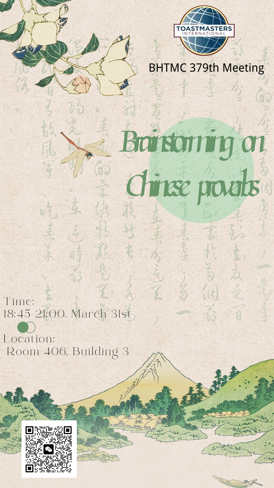
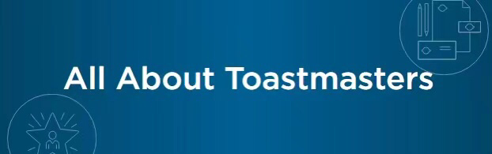
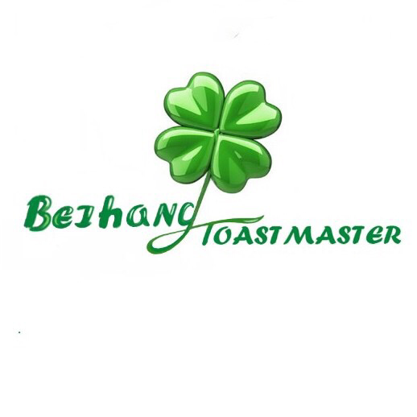

🍃Beihang TMC 379thMeeting🍃
Throughout the ages, many popular Chinese idiom stories have emerged from China's long cultural history. Some of these stories are philosophical, and others are thought-provoking and self-reflective. Perhaps part of them have been buried in the depths of people's memories over the long course of history, but it is undeniable that the valuable spiritual fruit among them is still brilliantly alive and waiting to be discovered by people in the 21st century.
In this toastmaster night, we will prepare ample exquisite Chinese proverbs for you to discover, dialectically explore the core notion in the collision of ideas, derive your own understanding in the process of continuous iteration, and share with a glance at their own Chinese proverb stories with everyone~
Don't hesitate to join our conference and enjoy the toastermaster family!Wish to see you on Friday night~
🔅Theme: Brainstorming on Chinese proverbs
👉Location: Room 406, Building 3 （3号楼406）北京航空航天大学学院路校区三号楼
🕙Date & Time: 18:45-21:00, March 31st. (This Friday)
🎙️Table Topic Master:Steven

